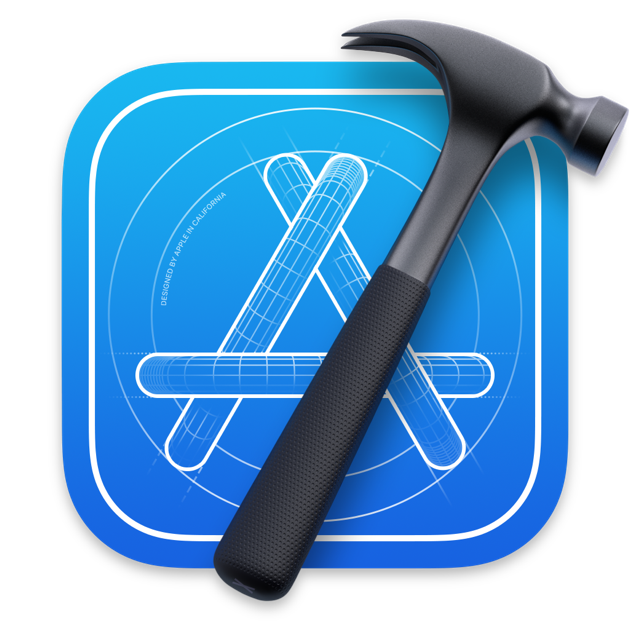

Stage Professionnel
CodataSchool
Développement mobile iOS
Introduction
Depuis 2017, CODATASCHOOL accompagne tous les publics (entreprises, dirigeants, salariés, développeurs, collectivités locales ...) dans leurs projets et actions de formation autour de l'IA et de la data. Ainsi elle met en relation les développeurs avec les entreprises.
Cadre du stage
- Entreprise: CodataSchool
- Durée du stage: 4 Janvier 2021 au 4 Mars 2021 (8 semaines)
- Membre du projet:
- Laure Bourgois (Présidente Directrice général)
- Aliou Doumbouya (Associé Directeur Marketing)
- Megnouche Zinedine (stagiaire développeur iOS)
Dû aux conditions sanitaires actuelles, ce stage a été éffectué en télétravail. Ce stage a été l’opportunité, pour moi, d’appréhender le métier de développeur et plus précisément dans le développement mobile. Ainsi j’ai pu appliquer les différentes notions apprises en cours sur un projet concret.
Au delà d’enrichir mes connaissances dans le développement, cela m’a permis de mieux comprendre le métier de développeur mobile iOS.
Objectifs
Développer une application iOS déjà avancé, qui permet à un utilisateur de trouver/signaler une place de stationnement à proximité en fonction du type de véhicule de ce dernier (Handicapé, deux roues…).
Capture d'écran de l'application
Travaux effectués
Au cours de ce stage, j’ai eu l’opportunité de découvrir le métier de développeurs d'application mobile iOS sous différents aspects, j'ai été amené à m'occuper de la partie graphique de l'application, le code et également la gestion de données via un server.J’ai participé également à la monétisation de l’application mobile avec plusieurs types de pub ainsi que différents achats in app (achat intégrés) proposé par l'application. J'ai pu ainsi, voir les problèmes qu'un développeur mobile pouvait rencontrer lors du développement d'une application mobile. Le chef de projet me donnait ainsi un certain nombre de tâches quotidiennes à faire avec une deadline respecter. Cela m'a permis d'apprendre comment optimiser mon temps et être le plus efficace possible dans mon développement.
Outils Utilisés

Apple MacbookPro macOS 12.11
- 
Xcode : Environnement de développement pour le développement d'application pour les différents OS D'apple tels que macOS, tvOS, iOS, watchOS

TestFlight est un service en ligne pour l'installation et le test en direct des applications mobiles, actuellement détenu par Apple Inc et uniquement proposé aux développeurs dans le cadre du programme pour développeurs iOS

Swift est un langage de programmation objet, principalement utilisé pour le développement d'application pour l'ecoSystème d'Apple

Firebase est un ensemble de services d'hébergement pour n'importe quel type d'application. Il propose d'héberger en NoSQL et en temps réel des bases de données, du contenu, de l'authentification sociale, et des notifications, ou encore des services, tel que par exemple un serveur de communication temps réel.
MoPub, une société de Twitter, fournit des solutions de monétisation aux éditeurs et aux développeurs d'applications mobiles du monde entier.

Mapbox est une entreprise américaine spécialisée dans la cartographie en ligne. Elle fournit ainsi la carte dans l'application

Slack est une plate-forme de communication collaborative ainsi qu'un logiciel de gestion de projets.
Trello est un outil de gestion de projet en ligne. C'est sur ce site que les differentes taches et objectifs sont postés avec une deadline

GitHub est une plateforme d'hébergement de code pour le contrôle de version et la collaboration. Elle permet, ainsi qu'à d'autres personnes, de travailler ensemble sur des projets, où que vous soyez, Github propose également un service de question réponses sur le développement informatique

Stack Overflow est un site web proposant des questions et réponses sur un large choix de thèmes concernant la programmation informatique.
Apport du stage
Ce stage m’a beaucoup apporté professionnellement et m’a permis d’atteindre une certaine maturité dans le développement mobile. Il m’a permis également d’appliquer la théorie appris dans mes études sur un projet concret. J’ai appris à simplifier de manière significative mon code et rendre l’utilisation de l’application beaucoup plus ergonomique. J’ai appris à prendre des initiatives en proposant des modifications au sein de l’application.
Problèmes rencontrés
Comme indiqué en introduction, le métier de développeur nécessite de l’autonomie, notamment lors de rencontre de problème dans le code. La documentation ainsi que les forums pour développeurs restent les meilleure outils pour trouver une solution, les sites tels que GitHub ainsi que stackoverflow m’on énormément apporté lors du développement du projet.
Conclusion
Ce stage m'a permis de mieux comprendre le métiers de développeur iOS. Le projet parking est un projet très ambitieux qui répond à un besoin, et pourrait apporter un gain de temps considérable notamment dans les grandes villes où le stationnement peut réellement poser problème. Le développement d’application iOS est un secteur très évolutif et intéressant, c’est donc dans ce secteur que je souhaite me former.
Remerciement
- Aliou DOUMBOUYA
- Laure Bourgois
- L'équipe CodataSchool
- Mme Lauthier
- Mr Llorens